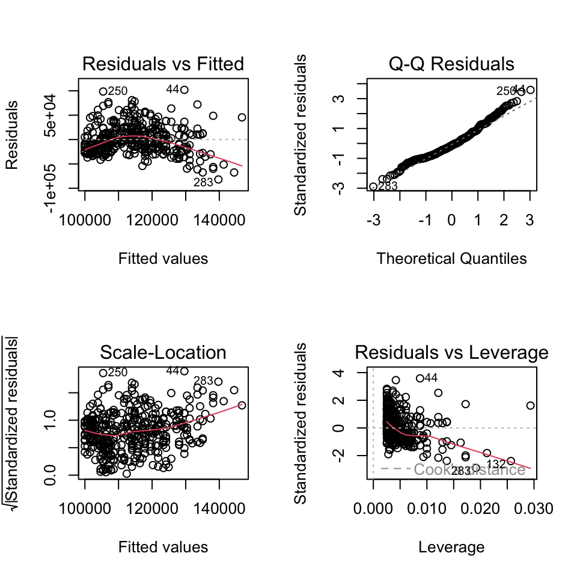
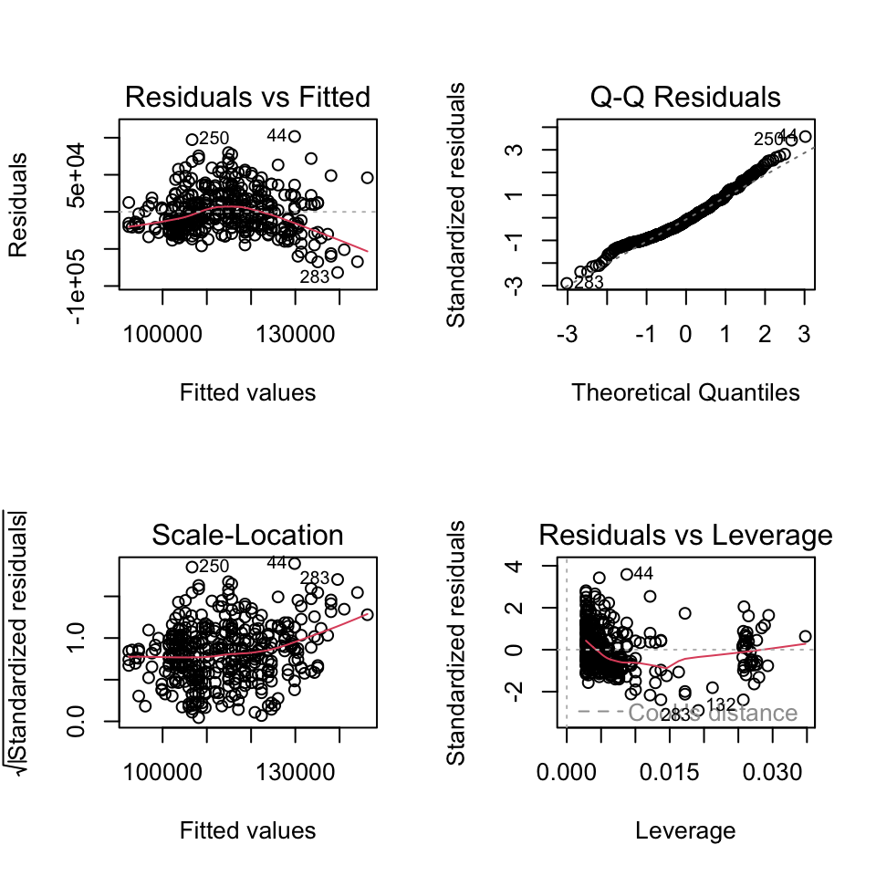

| Model 1 | Model 2 | Model 3 | |
|---|---|---|---|
| Years of Service | 779.57 *** | 747.61 *** | |
| (110.42) | (111.40) | ||
| Sex (0 = F; 1 = M) | 14088.01 ** | 9071.80 | |
| (5064.58) | (4861.64) | ||
| N | 397 | 397 | 397 |
| R2 | 0.11 | 0.02 | 0.12 |
| *** p < 0.001; ** p < 0.01; * p < 0.05. | |||
NHST Review.
CHECK-IN : Interpreting NHST. Click here, and use the tabs below to answer!
Salaries Dataset. “The 2008-09 nine-month academic salary for Assistant Professors, Associate Professors and Professors in a college in the U.S. The data were collected as part of the on-going effort of the college’s administration to monitor salary differences between male and female faculty members.”
- salary : the salary of the professor, in cold, hard, US American Dollars.
- yrs.service : the years of service the professor had at the college.
- sex : whether the professor was Male or FemaleTable 1. Predicting Salaries from Years of Service and Sex.
Graph of Model 1

Diagnostic Plots

Graph of Model 2

Diagnostic Plots

Diagnostic Plots

More Interaction Effect Examples
SEE PROFESSOR HANDOUT.

a tour of null and alternative realities
see the additional slide deck.